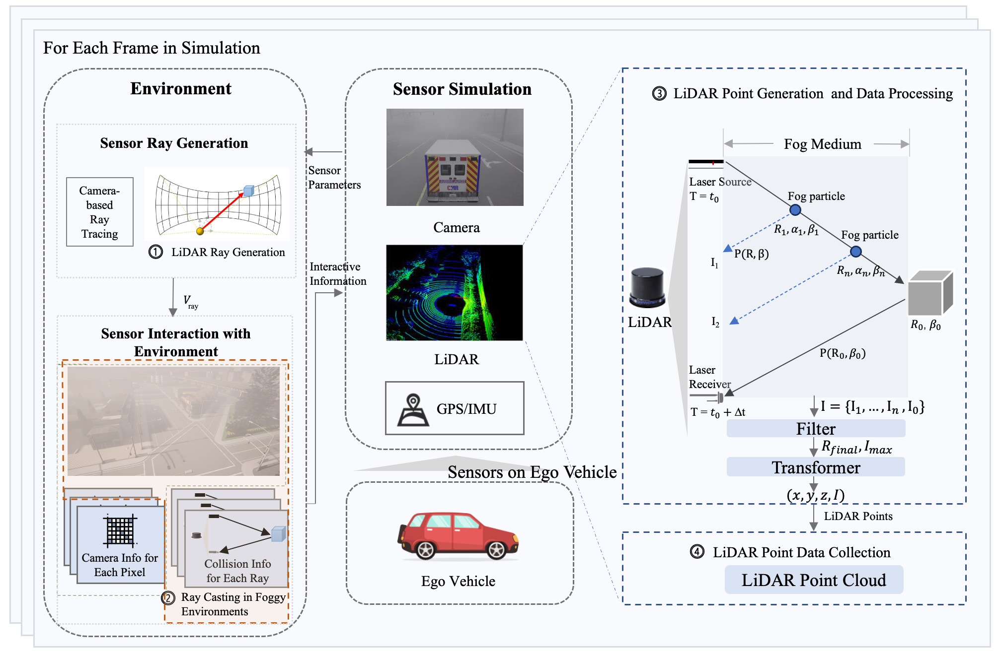

CornerDrive
ConerDrive is a factor-driven generation framework for testing autonomous driving systems end-to-end, which automatically generates safety-critical driving scenarios in which an autonomous driving system misbehaves.
Overview

Contribution
- We develop a platform based on CARLA that enables SOTIF testing of ADSes under adverse weather conditions. This platform can realistically simulate the impact of fog on LiDAR sensors and cameras, facilitating dynamic interaction between sensors and the environment.
- We design a time synchronization mechanism to ensure synchronization between ADSes and the simulator, ensuring the accuracy of test results. Importantly, our time synchronization mechanism operates transparently for ADSes.
- We conduct SOTIF tests on several representative ADSes from the CARLA Leaderboard under adverse weather conditions. Experimental results show that many issues undetectable in clear weather can be identified in adverse weather.
- We propose a safety-critical scenario generation and generalization algorithm that optimizes ordinary scenarios into accident scenarios (i.e., corner cases) and generalizes discovered corner cases to find more corner cases. Using this algorithm, we discover a series of corner cases in Baidu Apollo.
Demo
Source Code Installation & Run
Result
| Case # | Type | Fog (m) | Impact | Layer | Description | Video Link |
|---|---|---|---|---|---|---|
| 01 | Rear-end collision | 50 | Collision | Perception | The ego vehicle is driving on a straight road, and the fog noise interferes with the ego vehicle's detection of NPC vehicles directly in front, resulting in a collision. | Video |
| 02 | Lane change | 100 | Collision | Perception | When the ego vehicle is changing lanes and turning, due to fog noise, it did not recognize an NPC vehicle, resulting in a collision. | Video |
| 03 | False positive (fog noise) | 50 | Stuck | Perception | The ego vehicle identifies the fog noise as an obstacle while driving, causing it to stuck. | Video |
| 04 | False positive (standing water) | 600 | Stuck | Perception | The ego vehicle identifies the standing water ahead as a vehicle, causing it to stuck. | Video |
| 05 | False positive (traffic light) | 600 | Stuck | Planning | The ego vehicle identifies the traffic lights as a vehicle at the T-junction at night, resulting in an abnormal stop. | Video |
| 06 | False positive (wall) | 30 | Stuck | Perception | The ego vehicle identified the stone wall as a vehicle in front of the tunnel entrance, causing it to stop. | Video |
| 07 | False negative (pedestrian) | 50 | Collision | Perception | When the ego vehicle turns right, it does not recognize pedestrians crossing the road, resulting in a collision. | Video |
| 08 | False negative (motorcycle) | 50 | Collision | Perception | The ego vehicle does not detect the motorcycle ahead, resulting in a collision. | Video |
| 09 | False negative (large vehicle) | 30 | Collision | Perception | The ego car collides with an ambulance turning left on the right at an intersection. | Video |
| 10 | Uphill | 100 | Collision | Perception | A large amount of fog noise were generated in front of the ego vehicle when it was going uphill, resulting in the failure to recognize the vehicle in front and causing a collision. | Video |
| 11 | Downhill | 50 | Collision | Planning | The ego vehicle did not detect vehicles downhill, resulting in a collision. | Video |
| 12 | Detour | 150 | Detour/Stuck | Planning | When the ego vehicle does not completely change lanes, the route was re-planned, resulting in an abnormal stop. | Video |